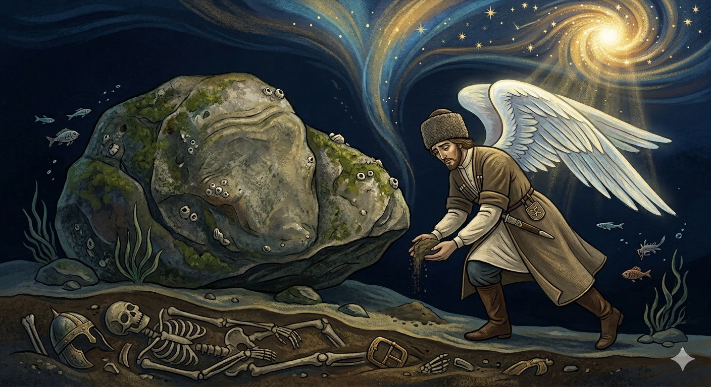

И.А. Дахкильгов. Хьехаме дувцарш - поучительные рассказы-притчи.
И.А. Дахкильгов. Хьехаме дувцарш - поучительные рассказы-притчи. Из ингушского фольклора.

Кхеро денна жоп
Далла малейкага аьннад: - Доле, лаьтта Ӏо а дессе, веннача сага дегӀ хьокхадаланза долча лаьттах дакъа да сона. Лаьтта а десса, цу тайпара дола лаьтта дакъа леха эттад малейк. Лоамашка, аренашка, хишка, Ӏамашка, - массанахьа хьожаш чакхдаьннад малейк… Даллас да аьнналаьтта цхьаннахьа долаш хиннадац. ТӀеххьар малек боккхача форда бухе дахад. КӀоаргагӀча метте хьежа доладеннад. Циггач улаш цхьа боккха кхера бӀаргабайнаб цунна. "Цу тайпара дола лаьтта укхан кӀалхара ца эце, кхы мичахьа хургда иззаморг сона-м хац", - аьнна, цу кхерийна кӀала теӀа доладеннад малейк. Меттахьа хьоабаьча кхеро хаьттад: - Фу деш доал хьо? Фу эш хьона? - Кхелхача сага дегӀ хьокхадаланза долча лаьттах цхьа дакъа да аьннад сога Даллас. Хьона кӀалха хила деза цу тайпара лаьтта. Из эца доал со. - Хьай ха ма йоае. Ӏа дувцаш дола лаьтта укхаз долаш дац хьона. Кхыбараш ца лаьрхӀача, духхьал ИсмаӀал, аьнна, цӀи йолаш вола кховзткъа кхоъ къонах воал укхаза дӀавелла, - аьннад кхеро. Ши кулг даьсса долаш урагӀа хьалдоладеннад малейк. Цхьаннахьа дац сага дегӀ ца кхеташ дола лаьтта. Ужжал дукха нах дӀабаьннаб укх дунен тӀара.
РУССКИЙ
Ответ камня
Бог послал ангела на Землю, сказав при этом: - Принеси мне земли с того места, где с нею не смешался прах человека. Ангел опустился на Землю и начал свои поиски. Он просмотрел все горы, равнины, реки и озера… Нигде ангел не мог отыскать такой земли. Наконец, ангел стал осматривать дно моря в его глубочайшем месте. Увидел он лежавший на самой глубине большой камень. "Если я не возьму из-под него, то уж нигде не найду такой земли", - решил ангел и стал подбираться под камень. Потревоженный камень спросил: - Чем ты занят? Что тебе надо? - Бог послал меня принести земли, к которой не примешался бы прах человека. Этой-то земли я и хочу взять из-под тебя, - ответил ангел. - Не ищи напрасно. Если не считать прочих, одних мужчин по имени Исмаил здесь в разное время было захоронено шестьдесят три человека, - ответил камень. Ни с чем ангел вернулся на небо, ибо нет земли, с которою не смешался бы прах человека.
ENGLISH
The Stone's Reply
God sent an angel to Earth, saying: 'Bring me some earth from a place where it has not been mixed with human ashes.' The angel descended to Earth and began his search. He searched all the mountains, plains, rivers and lakes… Nowhere could the angel find such earth. Finally, the angel began to search the seabed at its deepest point. There, at the very bottom, he saw a large rock. 'If I do not take some from beneath it, I shall never find such soil anywhere,' the angel decided, and began to make his way under the rock. The rock, startled, asked: 'What are you doing?' What do you want? 'God has sent me to fetch earth that has not been mixed with human dust. It is this very earth that I wish to take from beneath you,' replied the angel. 'Do not look in vain. Not counting others, sixty-three men named Ishmael alone have been buried here at various times,' replied the stone. The angel returned to heaven empty-handed, for there is no earth that has not been mingled with human ashes.
НОХЧИЙН
ПОГОВОРКИ
Вобараш а дикабараш а, - берригаш а цхьан кашамашка ухк. И хорошие, и плохие – все лежат на одном кладбище. Good and bad alike — everyone lies in the same graveyard in the end. Дика а вон а, - массо а цхьана кашамашка д1абохку.Доахан делча, тӀехкаш юс; саг велча, гӀулакхаш дус. Пала скотина – остались кости; умер человек – остались его дела. When livestock die, bones remain; when a person dies, their deeds remain. Хьайба елча, дакъош диса; стаг велча, г1уллакхаш диса.Ер деррига дуне дизза уллача лайх бий бизал мара боаца дом бала мегаргбацар. За весь снег, что на этом свете, нельза отдать и горсти пыли. All the snow in this world isn't worth a handful of dust. Дуьненчохь мел долу лай а цхьа шелла дом мах бац.Зийча – гу, лийхача – коро. Наблюдай – увидишь, ищи – найдешь. Watch, and you'll see; search, and you'll find. Хьаьжча – гу, лийхча – каро.Кица доаладича, харцдар а тӀехьа бакъ хет. Если произнести “кицу” (пословицу…), то даже ложь за правду сходит. Speak a proverb, and even a lie can pass for truth. Кица аьлча, харцдерг а бакъдерг санна хета.Лаьттах йоахка ганзаш лехачул лаьттах боалла пайда леха. Чем искать в земле клады, лучше извлекать пользу от самой земли. Rather than search the earth for buried treasure, better to draw benefit from the earth itself. Лаьтта чу лаьттачу ганзаш лоьхучул, лаьттара пайда лаха дика ду.Мелла догӀа делхарах, мелла адам къалхарах, лаьтта дизадац. Сколько бы дожди ни лили, и сколько бы люди ни умирали, земля никогда не насытится. No matter how much rain falls, and no matter how many people die, the earth is never satisfied. Мел дукха дог1а делха а, мел дукха адам вала а, лаьтта ца дуза.“Хац” аьннар дӀавахийтав, “хов” аьннар соцаваьв. Сказавшего “не знаю” отпустили, а сказавшего “знаю” задержали. One who said "I don't know" was let go; one who said "I know" was detained. «Ца хаьа» аьлларг д1авахийтина, «хаьа» аьлларг социйна.“Хац, дац” – цхьа дош, “хайра, дайра” – эзар дош. “Нет, не знаю” – одно слово, “знаю, видел” – тысяча слов. "No, I don't know" is one word; "I knew, I saw" is a thousand words. «Ца хаьа» - цхьа дош, «хаьара, гира» - эзар дош.Хьайро санна охь дунено адам. Жизнь перетирает (уносит) людей, словно зерно на мельнице. Life grinds people down, like a mill grinding grain. Хьайрас ялта санна, дуьнено адам охку.Цаховчох хатта дукха хиннад. Непонятное вызывает много вопросов. What is not understood raises many questions. Ца кхетачух дукха хатар хила.ЦӀеро дахча дуаш санна дунено адам дуъ. Жизнь пожирает людей, словно огонь – дрова. Life devours people, as fire devours firewood. Ц1ерос дечиг санна юуш ду дуьнено адам.